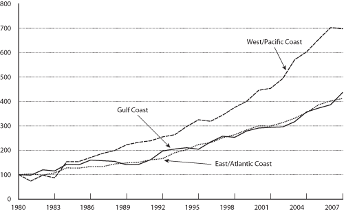

Excel | CSV | Table Version
(Index 1980=100)
KEY: TEUs = twenty-foot equivalent units. One 20-foot container equals one TEU, and one 40-foot container equals two TEUs.
NOTES: Totals are for all container ports in all 50 states and Puerto Rico. The data in this figure include both loaded and unloaded containers in U.S. international maritime activity and cover U.S. imports, exports, and transshipments.
SOURCE: U.S. Department of Transportation, Research and Innovative Technology Administration, Bureau of Transportation Statistics, based on data from the American Association of Port Authorities, available at www.aapa.org, as of March 20, 2009.